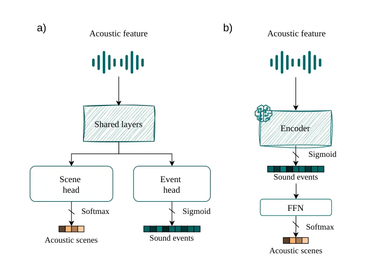
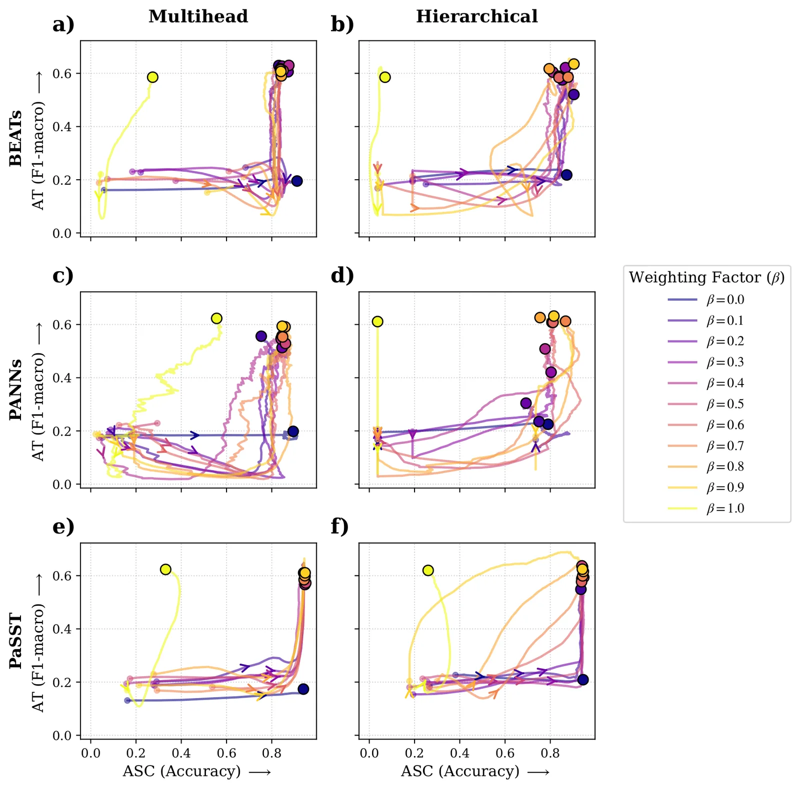
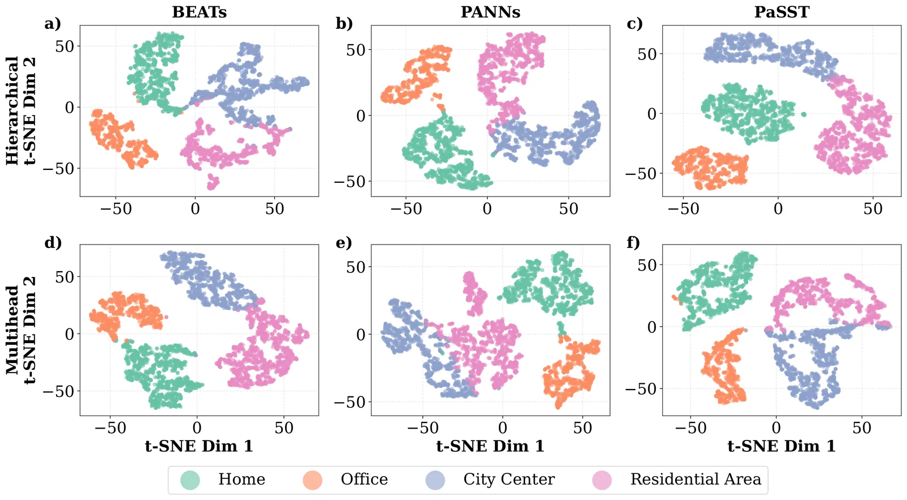

Introdução
A classificação de cenas acústicas (ASC) e o tagging de áudio (AT) são tarefas fundamentais para entender o contexto sonoro. Tradicionalmente, modelos multitarefa usam arquiteturas de múltiplas cabeças independentes. Isso ignora a dependência hierárquica natural: cenas são compostas por eventos. Os autores propõem um condicionamento hierárquico que prevê categorias de cena diretamente a partir de probabilidades intermediárias de eventos, usando um gargalo de informação para regularizar esse fluxo.
O estudo é empírico e extenso. Foram realizados 66 treinos completos usando três backbones de estado da arte: PaSST, PANNs e BEATs. A análise compara o desempenho e a dinâmica de otimização entre a abordagem tradicional e a proposta. Além das métricas, os autores introduzem um framework de interpretabilidade que combina teoria da informação, geometria de variedades e Análise Conceitual Formal (FCA) para entender como o modelo estrutura o conhecimento.
Contexto e Problema
Entender o ambiente sonoro é crucial para aplicações de IA, desde assistentes virtuais até monitoramento ambiental. Humanos percebem cenas acústicas combinando eventos discretos, como passos ou latidos, com texturas contínuas de fundo, a chamada "gist" acústica. Máquinas evoluíram de características manuais, como MFCCs, para redes profundas e transformers, que alcançam altas métricas mas operam como caixas pretas.
O desafio é replicar essa percepção hierárquica computacionalmente. A comunidade DCASE propõe tarefas como ASC, que identifica o local da gravação, e AT, que identifica sons presentes. Este trabalho foca na relação entre esses dois níveis, utilizando datasets TUT Sound Events e TUT Acoustic Scenes. A hipótese central é que forçar o modelo a respeitar a estrutura evento-cena melhora não apenas a precisão, mas a qualidade da representação latente.
A Arquitetura Proposta
A arquitetura tradicional para multitarefa, mostrada na Figura 1a, utiliza camadas compartilhadas que se ramificam em cabeças independentes para eventos e cenas. Isso permite que o modelo otimize as duas tarefas separadamente após o compartilhamento de features. No entanto, essa abordagem não impõe nenhuma relação causal ou estrutural entre o que o modelo aprende sobre eventos e o que aprende sobre cenas.
A proposta, ilustrada na Figura 1b, inverte ou encadeia essa lógica. O modelo primeiro extrai características acústicas e prevê as probabilidades dos eventos sonoros. Essas probabilidades normais, P(E|S), são então usadas como entrada para prever a cena acústica. Essa conexão direta cria um gargalo de informação: a representação da cena é forçada a ser derivada exclusivamente da interpretação dos eventos, alinhando a estrutura do modelo com a hierarquia física do mundo sonoro.

Mecanismo de Condicionamento
O coração da proposta é o condicionamento hierárquico. Em vez de ter duas saídas independentes, a previsão da cena é condicionada à distribuição de probabilidade dos eventos. Isso significa que o modelo deve primeiro entender "o que está acontecendo" (eventos) para decidir "onde estamos" (cena). Essa estrutura é regularizada por um termo de perda que age como um gargalo de informação, forçando a representação intermediária a ser compacta e informativa.
Os autores testam diferentes pesos de perda, variando o parâmetro beta entre 0.0 e 1.0. O beta controla o trade-off entre a precisão da classificação de eventos e a classificação de cenas. Ao variar esse peso, eles exploram como o equilíbrio entre as tarefas afeta a capacidade do modelo de aprender representações úteis. O foco não é apenas obter a melhor métrica, mas entender como a estrutura hierárquica altera a dinâmica de aprendizado.
Interpretabilidade e Análise
A interpretação do que o modelo aprende é tão importante quanto o desempenho. Os autores utilizam três perspectivas complementares. Primeiro, analisam o gargalo de informação, medindo a entropia condicional e a informação mútua entre eventos e cenas. Segundo, examinam a geometria da variedade latente usando projeções t-SNE para visualizar a separabilidade dos clusters. Terceiro, aplicam Análise Conceitual Formal (FCA) sobre representações TF-IDF dos eventos para mapear relações lógicas entre sons e locais.
A FCA é particularmente interessante. Ela trata cada cena como um objeto e cada evento como um atributo. Constrói-se uma matriz binária indicando se um evento ocorre em uma cena acima de um limiar. A FCA gera um reticulado que mostra quais combinações de eventos definem quais cenas. Isso permite visualizar quais associações o modelo aprendeu são fortes e quais são ruído, oferecendo uma visão estruturada da semântica aprendida.
Resultados de Otimização
Os resultados mostram que a arquitetura hierárquica é competitiva em métricas clássicas, mas seu verdadeiro valor está na estabilidade da otimização. Em arquiteturas multi-cabeça, o modelo tende a dominar a tarefa mais fácil, a classificação de cena (ASC), muito cedo no treinamento, ignorando a complexidade da tagging de áudio (AT). Isso cria um desequilíbrio onde o aprendizado não é sincronizado.
A abordagem hierárquica, por outro lado, promove um aprendizado dual sincronizado. Isso é especialmente evidente quando os pesos de perda são balanceados (beta entre 0.6 e 0.9). O modelo é forçado a prestar atenção tanto aos eventos quanto às cenas simultaneamente, pois a previsão da cena depende diretamente da qualidade da previsão dos eventos. Isso resulta em trajetórias de treinamento mais equilibradas, como visto nos gráficos de desempenho.

Qualidade da Representação Latente
A análise de interpretabilidade revela que a hierarquia cria um espaço latente mais estruturado. Métricas de informação mútua mostram que a arquitetura hierárquica alcança maior informação mútua entre eventos e cenas, indicando que a representação intermediária captura melhor a dependência real entre eles. Além disso, a entropia condicional é menor, sugerindo que, dada a cena, os eventos previstos são mais consistentes e menos incertos.
Essa estrutura é visível nas projeções t-SNE. Os clusters de eventos para cada cena são mais separados e coesos na abordagem hierárquica. Isso significa que o modelo não apenas acerta a classificação, mas organiza o conhecimento de forma que eventos similares a uma cena estejam agrupados no espaço latente, refletindo uma compreensão mais profunda da relação evento-cena.

Análise Conceitual Formal (FCA)
A Análise Conceitual Formal (FCA) corrobora essas observações. Os reticulados gerados a partir das previsões do modelo hierárquico preservam as relações chave entre eventos e cenas presentes nos dados ground-truth, enquanto reduzem associações menos informativas. Isso indica que o modelo está aprendendo a distinguir entre eventos que são definidores de uma cena e aqueles que são apenas ruído de fundo ou contextuais.
A aplicação de TF-IDF nas representações de eventos ajuda a destacar associações discriminativas. Eventos comuns a muitas cenas recebem pesos menores, enquanto eventos raros e específicos recebem pesos maiores. Isso permite que a FCA identifique quais sons são verdadeiros marcadores de um ambiente, algo que a arquitetura multi-cabeça tradicional não consegue fazer com a mesma clareza.
Limitações e Escopo
É importante notar as limitações do estudo. A pesquisa foca em datasets específicos (TUT) e em tarefas globais de AT, não em detecção temporal de eventos (SED). A generalização para outros domínios ou tipos de áudio não foi testada. Além disso, a complexidade computacional do treinamento hierárquico pode ser maior devido à dependência sequencial das tarefas, embora isso não tenha sido o foco principal da análise.
Outro ponto é a sensibilidade ao parâmetro beta. Embora o desempenho seja robusto em uma faixa específica, a escolha do peso de perda ainda requer ajuste. O paper não propõe um método automático para determinar o beta ideal, deixando isso como uma hiperparametro a ser ajustado pelo usuário. Isso limita a aplicabilidade imediata em cenários onde o tempo de treinamento é crítico.
Conclusão
Em resumo, este paper demonstra que impor uma estrutura hierárquica em modelos de áudio multitarefa não é apenas uma escolha arquitetônica, mas uma regularização poderosa. Ao forçar o modelo a aprender eventos antes de cenas, os autores criam representações latentes mais semanticamente fiéis e geometricamente separáveis.
A combinação de análise de informação mútua, geometria de variedades e FCA oferece um toolkit robusto para interpretar modelos de deep learning em áudio. Isso vai além de métricas de precisão, permitindo que desenvolvedores entendam o que o modelo realmente "ouve" e como ele estrutura seu conhecimento do mundo sonoro.
Implicações Práticas
Para desenvolvedores e pesquisadores, a mensagem é clara: a estrutura do modelo importa tanto quanto a quantidade de dados. Arquiteturas que refletem a semântica do domínio podem levar a modelos mais estáveis e interpretáveis, mesmo sem ganhos dramáticos em métricas brutais. Este trabalho abre caminho para futuras investigações sobre como outras hierarquias perceptivas podem ser incorporadas em modelos de áudio.
O que fica
- A arquitetura hierárquica sincroniza o aprendizado de classificação de cenas e detecção de eventos, evitando que o modelo resolva a tarefa mais fácil primeiro.
- Análises de informação mútua e clusters mostram que a representação intermediária fica mais estruturada e semanticamente fiel ao mundo real.
- O ganho não é apenas em métricas, mas na estabilidade da otimização, especialmente com pesos de perda balanceados.
Paper original: Hierarchical Interpretable Multitask Audio Representation Learning: An Analysis of Event-Scene Relationships through the Information Bottleneck
Comentários
Nenhum comentário ainda. Seja o primeiro.